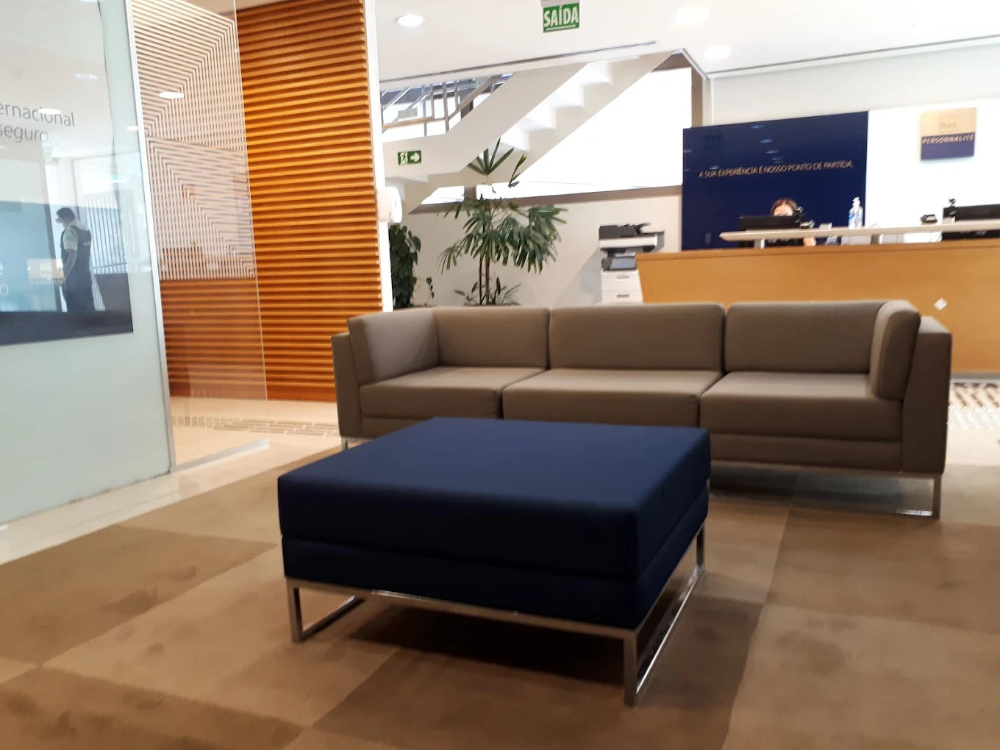

Carreira Bancária: Como é atuar na gestão de pessoas e finanças
Em entrevista exclusiva, a gerente Mayra Caetano Freitas conta como lidera equipes e gerencia carteiras no Itaú Personnalité.

Ambiente de atendimento em agência bancária (Foto ilustrativa)
O papel do Gerente de Atendimento
A Gerente de Atendimento em um banco é responsável por liderar a equipe e, principalmente, por gerenciar a carteira de clientes. Ela atua como consultora financeira para oferecer produtos (investimentos, crédito) e garantir a satisfação e a fidelização dos correntistas.
Nossa entrevistada é Mayra Caetano Freitas, gerente no Itaú Personnalité, que compartilha sua trajetória de 7 anos de formação e certificações para alcançar o cargo de gestão.